Forward Diffusion Equation Used
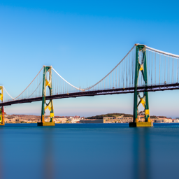
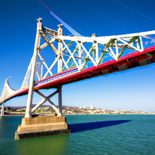
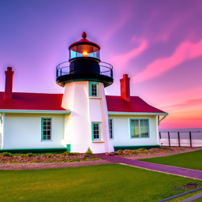
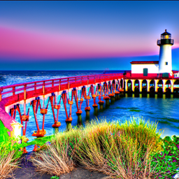
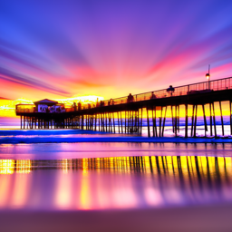
Reflection:I used the DeepFloyd IF diffusion model to generate these images. The seed used was 100, and I generated two images with each prompt, one with 20 inference steps and 80 inference steps. The diffusion model does a good job generating the object in interest, but it doesn't have good geography attributes. It generates a default bridge, lighthouse, and pier, but not for the specific places I mentioned. This could be lack of geographical locations in the labels that were used when creating the data. Increasing the num_inference steps had the model include finer details in the images but did not fix the geographical attributes part. That kind of accuracy depends more on training data and the text encoder’s representation than on the number of reverse-diffusion steps.
In this section, I visualize the forward diffusion process by progressively adding Gaussian noise to a clean MNIST image at different timesteps. As the timestep t increases, the noise level grows according to the forward noise schedule, causing the image to gradually lose structure and eventually resemble pure noise. These visualizations confirm that my implementation of the forward diffusion equation is correct, and they illustrate the smooth transition from data distribution to the noise distribution as required for training diffusion and flow-matching models. Above is the equation I used. The second equation is an approximation of the first.


In this part, I applied classical Gaussian blur filtering to the noisy Campanile images from timesteps t = 250, 500, 750. Gaussian blur is a simple smoothing operation that reduces high-frequency noise but cannot recover lost structure or details. I increased the blur strength as the noise became more severe:
Although the blur removes some grain, it also wipes out edges and geometry, especially at higher timesteps. This demonstrates why classical filtering cannot meaningfully reverse the diffusion process — the corruption is too strong, and Gaussian blur has no way to distinguish noise from signal the way a learned model can.
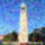
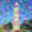
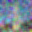
In this part, I use a pretrained diffusion model (DeepFloyd IF, Stage 1 UNet) to perform one-step denoising on the same noisy images from timesteps t = 250, 500, 750. Unlike Gaussian blur, which applies a fixed smoothing filter, this UNet has been trained on millions of image–noise pairs and can estimate the actual Gaussian noise that was added during the forward diffusion process.
For each timestep t, I:
forward() function to generate a noisy version of the Campanile image.stage_1.unet along with the timestep t and the text embedding for
"a high quality photo".x₀ = (xₜ - √(1 - ᾱₜ) · ε̂) / √(ᾱₜ)
This one-step denoising recovers far more structure and detail than classical Gaussian blur, highlighting the power of a learned reverse diffusion model compared to fixed image filters.
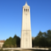
In this part, I improve upon the one-step denoising from Part 1.3 by performing iterative denoising using the pretrained DeepFloyd Stage 1 UNet. One-step denoising works well for moderate noise but struggles when the image is heavily corrupted. Iterative denoising progressively refines the image, gradually removing noise over multiple timesteps.
The process is as follows:
strided_timesteps, a list of monotonically decreasing timesteps starting at 990, with stride 30, ending at 0.strided_timesteps[i_start], here i_start = 10.iterative_denoise():
x₀.add_variance().Iterative denoising is much closer to the natural image manifold and better preserves details compared to one-step denoising or Gaussian blur, especially for high-noise timesteps. This demonstrates the strength of diffusion models in handling heavily corrupted images.
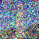
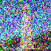
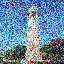
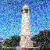
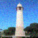

Observation: Iterative denoising gradually removes noise and recovers fine details much better than the one-step method or Gaussian blur. The one-step method performs reasonably well but struggles with higher noise levels, while Gaussian blur removes some noise but also blurs fine details.
I generate images from scratch by passing random noise through the iterative denoising function. Here, I generate 10 images using the prompt "a high quality photo".
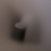
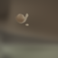
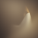
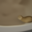
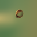
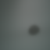
Observation: The images generated from pure noise capture the general structure and content suggested by the prompt "a high quality photo". Details and quality are not perfect yet, but the iterative denoising progressively guides the noise towards a recognizable natural image.
To improve the quality of generated images, I used Classifier-Free Guidance (CFG). In CFG, I compute both a conditional noise estimate εθ(xt, t, c) and an unconditional noise estimate εθ(xt, t, ∅). The final guided noise estimate is computed as:
εCFG = ε(xt, t, ∅) + s * (ε(xt, t, c) - ε(xt, t, ∅))
where s is the CFG scale (I used s = 7), c is the conditional prompt embedding, and ∅ is the null prompt embedding. Higher s values generally produce higher quality images at the expense of diversity.

Observation: Using CFG with a scale of 7 significantly improved the image fidelity compared to unconditional generation. The images better capture the structure and content of the prompt "a high quality photo," while still retaining some variation across samples.
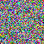
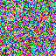
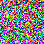

For the Campanile image, I originally used a timestep stride of 10:
strided_timesteps = torch.arange(990, -1, -10).tolist()This produced around 100 denoising steps, which was sufficient because the Campanile image is relatively simple and the model could reconstruct it without needing fine-grained control.
However, when I applied the same settings to the plane and motorcycle images, the edits did not generate as well. These images contain much more complex structure (edges, shapes, and high-frequency details), so the denoising needed to happen more gradually to preserve fidelity.
To address this, I reduced the stride to 5, giving roughly 200 denoising steps:
strided_timesteps = torch.arange(990, -1, -5).tolist()
I also extended the range of start_indices up to 198, allowing edits to begin at lower noise levels. This produces higher-quality and more faithful reconstructions for images with more intricate geometry.
In this section, I experimented with projecting non-realistic images (a web image and two hand-drawn sketches) onto the natural image manifold using the same CFG denoising method as before. I processed each image and applied noise levels: [1, 3, 5, 7, 10, 20].
I downloaded a web image, processed it to 64×64, and applied CFG denoising.
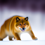
I drew the first sketch using the Colab canvas. Since it’s 300×600, I drew in the center so the model would keep the content after cropping.
Same process with a second drawing, again applying the same noise schedule.
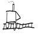
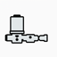

Inpainting fills in missing parts of an image using the diffusion model.
Given an image xorig and a binary mask m:
m = 1 → region to inpaint (model generates new content)m = 0 → keep the original pixels
During the reverse diffusion process, after predicting xt, overwrite the unmasked region with the correctly-noised version of the original image.
This keeps the original structure outside the mask while letting the model fill the masked region.
xₜ ← m · xₜ + (1 − m) · forward(x_orig, t)
Below are the results for the Campanile and two of my own images.


This section extends SDEdit by guiding image edits with a text prompt. Instead of only projecting the noisy image back to the natural image manifold, I also steer the denoising process using a prompt such as:
"a photo of palm trees along the coast"
I repeat this for different noise levels. Low noise keeps the image close to the original, while high noise transforms it more toward the prompt.
Prompt: "a photo of palm trees along the coast"
For custom images, I use much higher noise levels (20-150) and increased CFG scale (12 instead of 7) to allow the text prompt to have stronger influence. This creates more dramatic artistic transformations while still retaining some underlying structure from the original image. At higher noise levels, the plane becomes increasingly abstract and cliff-like.
Prompt: "a watercolor painting of sunset cliffs"

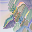
Similarly, the motorcycle image uses higher noise levels to enable stronger artistic transformation. The warm tones and painterly textures from the campfire prompt gradually blend with and eventually dominate the motorcycle's form.
Prompt: "an oil painting of people around a campfire"
Here, I created visual anagrams — optical illusions where an image looks like one scene when upright but reveals a completely different scene when flipped upside down. To do this, I denoised the same image twice with different prompts: once normally, and once after flipping the image. I then flipped the second result back and averaged the two noise estimates. This way, the final image contains features from both prompts.
ε₁ = UNet(xₜ, t, prompt p₁)
ε₂ = flip( UNet(flip(xₜ), t, prompt p₂) )
ε = (ε₁ + ε₂) / 2
I sometimes had to run this multiple times to get a clear illusion because small differences in noise can affect how well the two prompts blend together.
Upright view:
Flipped upside down:
Upright view:
">Flipped upside down:
Upright view:
Flipped upside down:
My Hybrid Images with Factorized Diffusion:
In this part, I created hybrid images by combining low-frequency content from one prompt with high-frequency content from another using a diffusion model.
I first generated two separate noise estimates from different text prompts (ϵ₁ and ϵ₂) using a UNet diffusion model with classifier-free guidance.
Next, I separated the low- and high-frequency components by applying a Gaussian blur to each noise estimate, using a kernel size of 33 and a sigma of 2.
Finally, I combined the low-frequency components from the first prompt with the high-frequency components from the second prompt to create a hybrid noise estimate, which I then iteratively denoised to produce the final hybrid images.
This technique lets me see one concept in the image from a distance (low frequencies) and another concept up close (high frequencies).
In this project, I implemented a denoiser as a UNet. The network consists of several downsampling and upsampling blocks with skip connections, allowing features from earlier layers to be reused in later layers. At a high level, the components of the UNet are:
torch.cat().For training the denoiser, I generated noisy MNIST digits by adding Gaussian noise with different standard deviations (σ). The network was trained to map noisy images to clean images using an L2 loss.
Below, I show examples of a single MNIST image corrupted with increasing levels of Gaussian noise (σ = 0.0, 0.2, 0.4, 0.5, 0.6, 0.8, 1.0):


The visualization shows that as σ increases, the image becomes progressively noisier.
For this part, I trained the UNet model defined in section 1.1 to denoise noisy MNIST digits. The goal was to learn a mapping from a noisy image x̃ to a clean image x using an L2 loss.
Training Setup:
torchvision.datasets.MNIST. The data was shuffled before creating the dataloader.During training, I visualized the denoised results on the test set after the 1st and 5th epochs to monitor progress. The training loop ensures that each batch receives newly generated noise, allowing the model to see varied noisy images each epoch.
The figure below shows the training loss over all iterations:

Below are sample denoising results on the test set with noise level σ = 0.5:


Below are the denoising results for different noise levels after 5 epochs of training. Each row shows a single clean digit, the corresponding noisy input, and the denoised output:
The denoiser performs well for noise levels close to the training σ = 0.5. For lower noise, it slightly oversmooths the images, and for higher noise, some fine details are lost.
The images below show the outputs generated by the UNet after denoising pure noise. Early in training, the outputs are mostly unstructured and noisy. After 5 epochs, the model starts generating fuzzy digits that resemble the average of the MNIST training set.


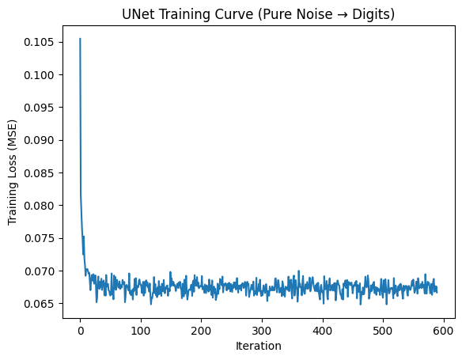
I observed that the generated outputs are blurry and resemble a mix of digits from the training set. This happens because the MSE loss encourages the model to predict the point that minimizes the squared distance to all training examples — essentially the centroid of the dataset. This behavior is similar to k-means clustering (centroid) or autoencoders trained on noisy inputs, where the output is a “prototype” of the training distribution. In other words, the UNet is learning to hallucinate digits that capture the average structure of MNIST digits, which is why the outputs often look like fuzzy 0s, 1s, or 7s.
In this part, I trained a time-conditioned UNet to predict the flow at a given timestep for noisy MNIST images. The training process is straightforward: for each batch, I randomly pick an image x₀ from the training set, sample a random timestep t, add noise to obtain xₜ, and train the model to predict the flow at t. Repeating this across multiple images and timesteps allows the model to learn how to denoise and match the flow across the entire diffusion process.
I used a batch size of 512, hidden dimension D = 64 for the UNet, and trained over 10 epochs using the Adam optimizer with an initial learning rate of 1e-2. To stabilize training, I applied an exponential learning rate decay with a gamma factor of 0.1^(1/num_epochs), stepping the scheduler after each epoch.
Below is the training loss curve showing the average flow-matching loss per epoch. As training progresses, the model learns to accurately predict the flow for noisy images at different timesteps.
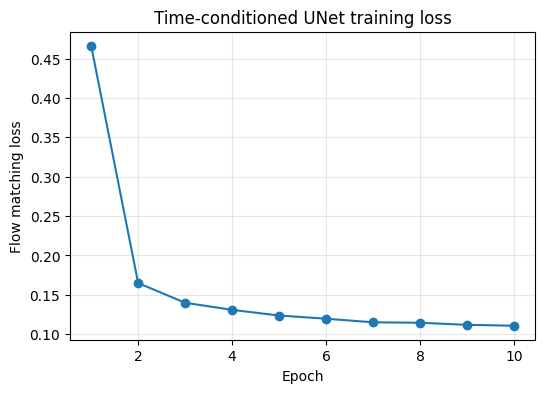
Below are the generated samples from the Time-Conditioned UNet after 1, 5, and 10 epochs.
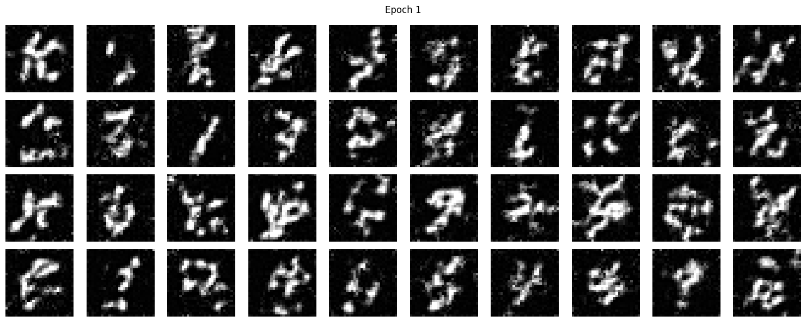
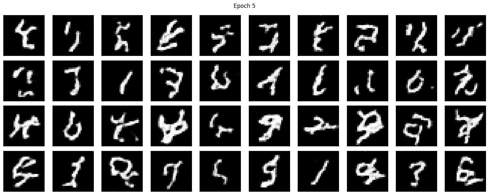
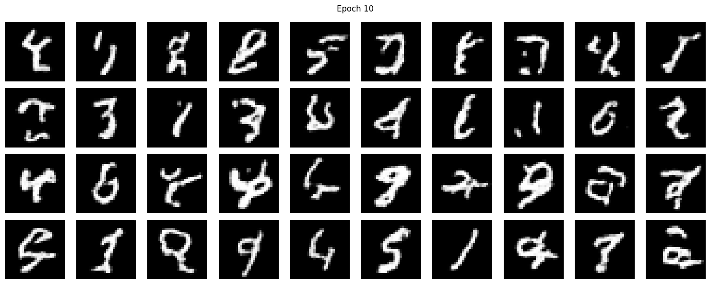
In this section, I trained a class-conditioned UNet to predict the flow for MNIST digits while conditioning on their class labels. The training procedure is very similar to the time-only UNet, with the primary difference being that I provide the model a class vector y and occasionally perform unconditional generation with probability 0.1.
I used the MNIST training set with a batch size of 512 and trained for 10 epochs. The model is a UNet with hidden dimension 128, and I optimized it using the Adam optimizer with an initial learning rate of 0.01, decaying exponentially each epoch.
During training, I computed the flow-matching loss for each batch and tracked the average loss per epoch. The loss curve below shows how the model converged over time.

I sampled from the class-conditioned UNet to generate MNIST digits while providing the model with the desired class label. I used classifier-free guidance with a guidance scale of 5.0 to help the model produce sharper and more class-consistent samples. For each digit (0–9), I generated 4 samples per epoch to visualize the model's performance over training.
Below are the generated samples after epochs 1, 5, and 10. As expected, the model improves with training, producing digits that become clearer and more consistent with their class over time.
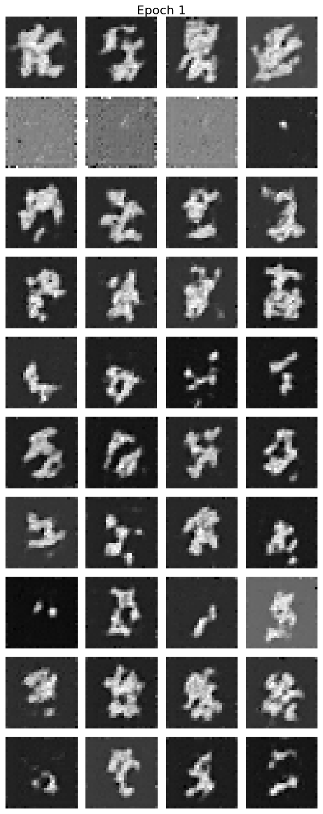
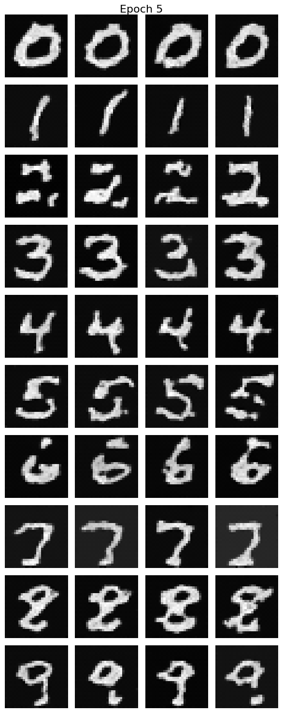
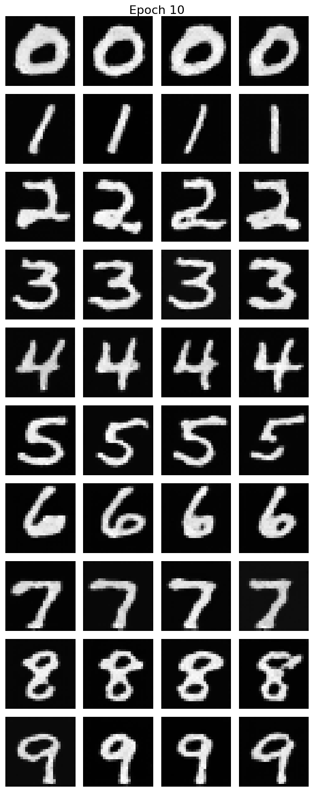
Here I removed the exponential learning rate scheduler. To compensate for the lack of scheduler, I:
AdamW with a small weight decay (1e-4).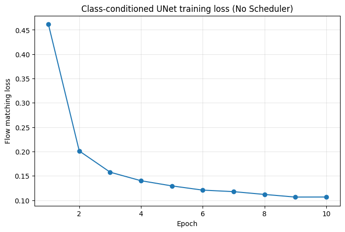
Even without the scheduler, the model successfully generates legible digits after 10 epochs. Below are the sample grids for Epochs 1, 5, and 10 without the scheduler.
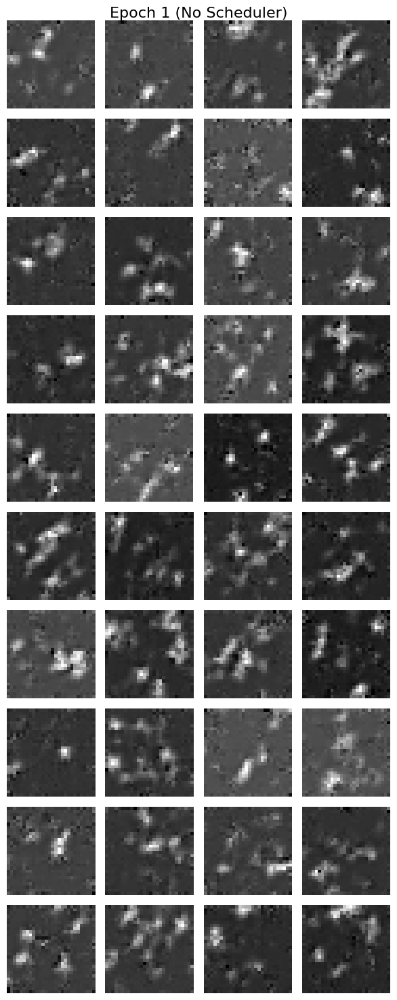
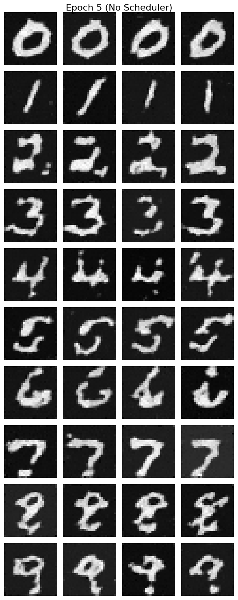
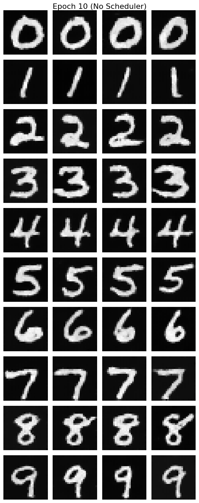